Безопасная экосистема интеллектуальной транспортной инфраструктуры
Д.т.н., профессор, заведующий кафедрой «Автоматика
и телемеханика на железных дорогах»,
руководитель Центра компьютерных железнодорожных технологий,
член трех НТС (ОАО «РЖД» (секция «Автоматика и телемеханика»),
ОАО «Скоростные магистрали»,
Комитета по развитию транспортной инфраструктуры г. Санкт-Петербурга),
Главный редактор журнала «Автоматика на транспорте» (К1)
Цель проекта

технологический суверенитет РФ в области цифровых решений для железнодорожного транспорта
Основные задачи
в Политике управления человеческим капиталом
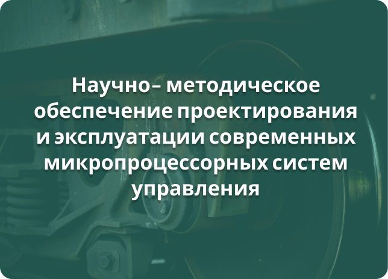
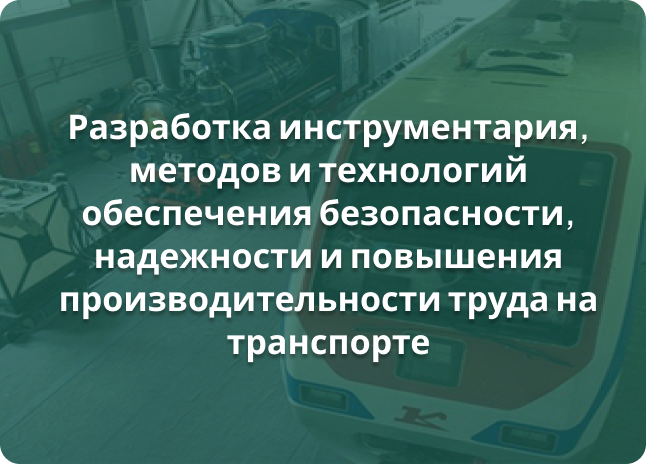
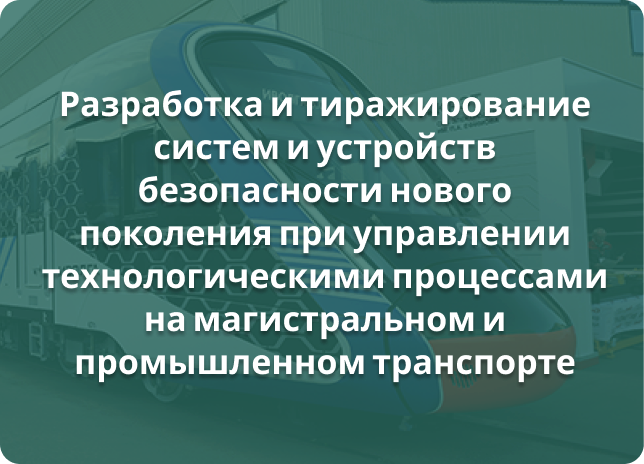
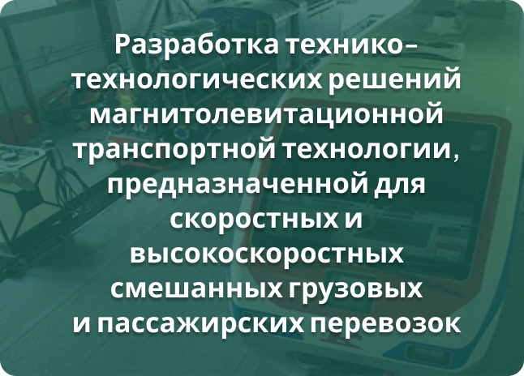
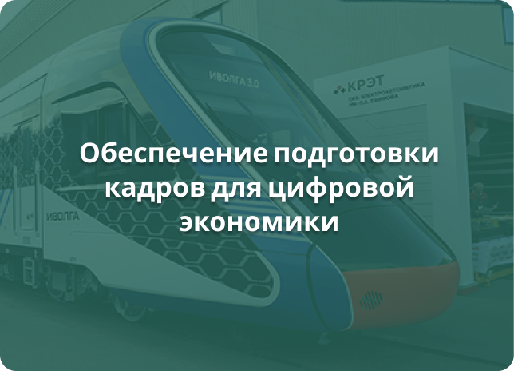
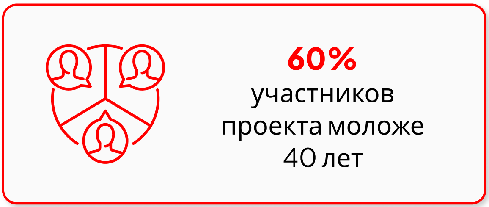
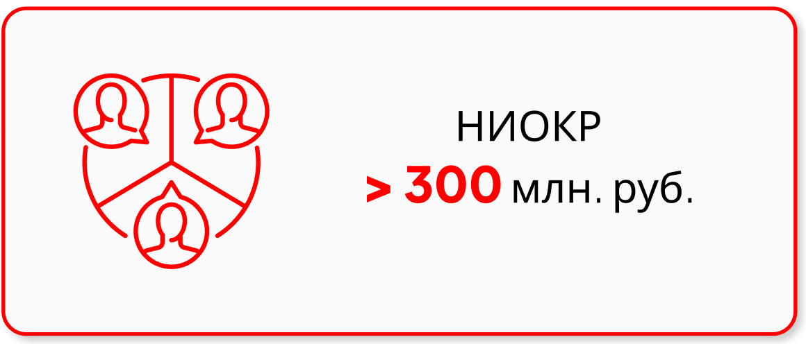
Ключевые результаты
1
 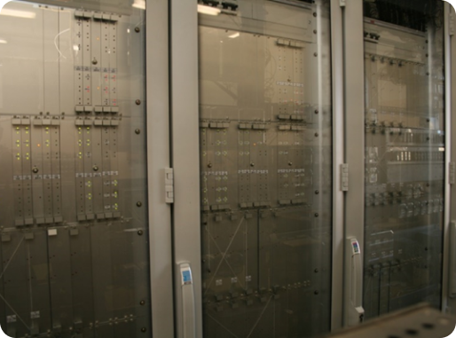
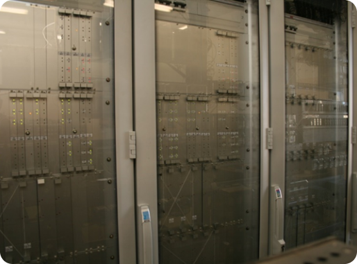
|
2
 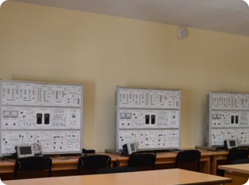
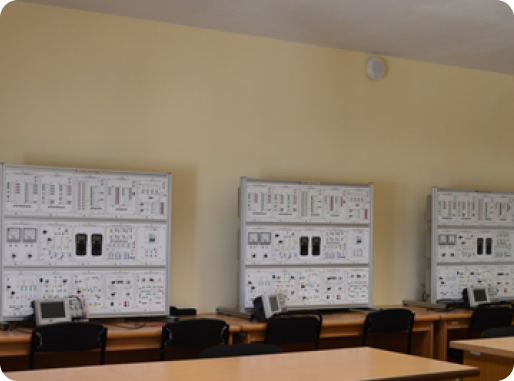
|
|
3
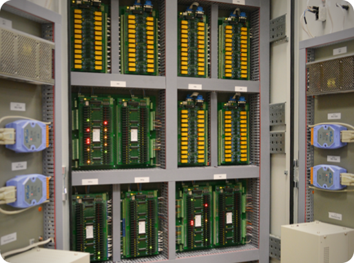
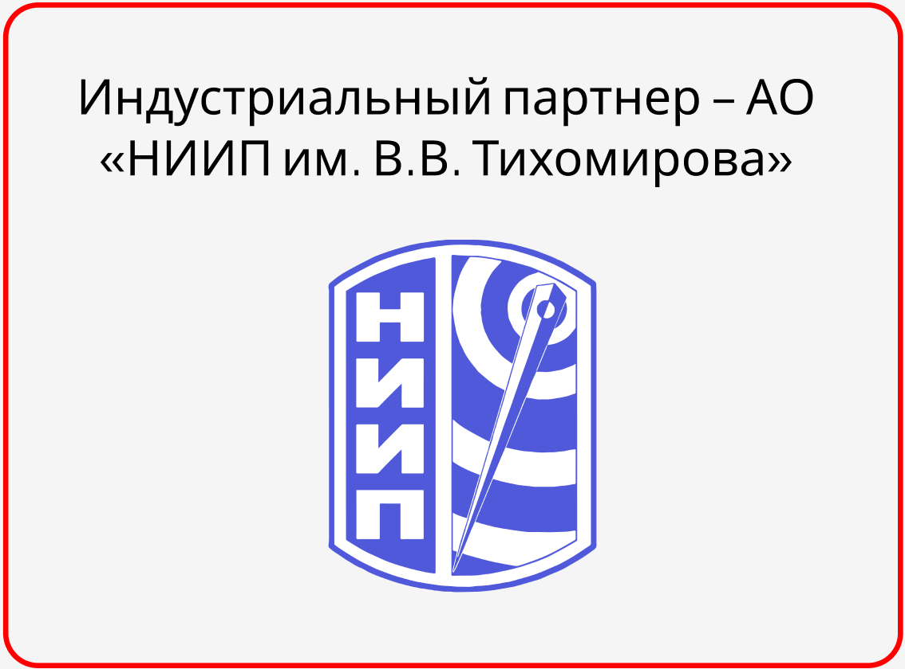
|
|
4
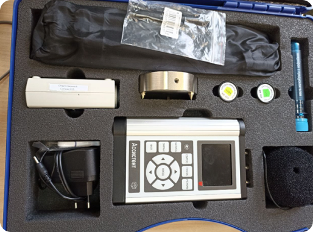
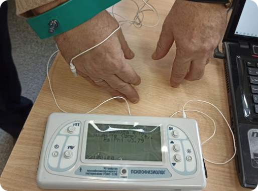
|